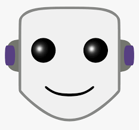

My name is Lev, this is my first semester at IIT, I transfered from COD and UIUC.I've been learning coding since high-school but still have a lot to learn of course. Originaly I applied for a Computer Science major, but chose ITM instead because math is pretty cringe. I spent most of the time learning or working as a math teacher. My favourite sport is soccer and favourite team is Everton.I am from Russia and moved to US 9 years ago.
As I mentioned, I watch twitch a lot. It is opened on my computer in the background pretty much the whole time that I am awake. You can read more about it here: Twitch